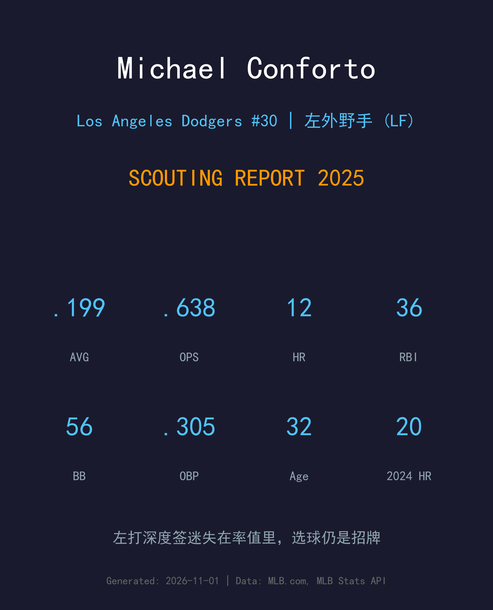
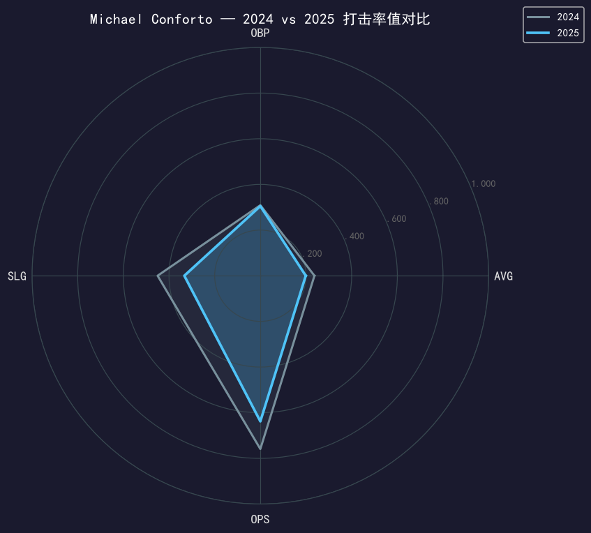
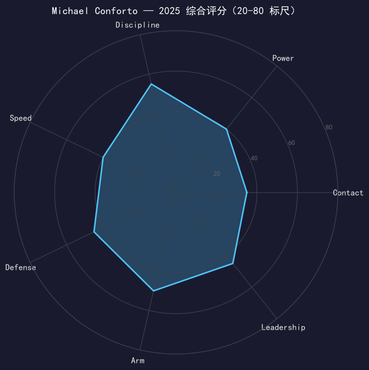

Los Angeles Dodgers #30 | 左外野手 | 左打 | 两届 Pac-12 年度最佳 · "Forto"

Michael Conforto 的 2025 年是「期望值」与「现实」差距最大的道奇故事之一。这份一年合约原本被寄望为左打轮值的即插即用火力，最终交出的却是.199/.305/.333、OPS .638的生涯最差率值赛季。
拆开看，他的崩塌几乎全在长打：AVG 掉了 38 点尚在波动范围，SLG 却从 .450 崩到 .333（ISO 从 .213 跌到 .134），全垒打从 20 支腰斩到 12 支。唯一守住本色的是选球——56 次保送、11.5% 保送率在伤兵满营的赛季里仍是联盟上游水准，OBP .305 几乎全靠保送堆出来。
他没有出现在任何一场季后赛出赛名单里，但作为阵容成员随队拿到生涯首枚世界大赛戒指。赛季结束后他将成为自由球员，32 岁的他需要一次真正的反弹来证明 2025 只是意外，而不是终点。
2015 年世界大赛第 4 场单场双响，成为史上第五位在世界大赛单场双轰的新秀（自 1996 年 Andruw Jones 后首位）；职业生涯第二场大联盟比赛就 4 安 4 分，大都会队史首人。
上半季 .284，成为 David Wright（2007）之后第一位 24 岁或更年轻单季 25 轰的大都会球员。
史上仅有的三位同时打过小联盟世界大赛（2004）、大学世界大赛（2013，俄勒冈州大）和大联盟世界大赛（2015）的球员之一，另两位是 Jason Varitek 与 Ed Vosberg；大学期间两度当选 Pac-12 年度最佳球员。
作为阵容成员随道奇完成二连霸，收获职业生涯第一枚冠军戒指。

| 赛季 | G | PA | AVG | OBP | SLG | OPS | HR | RBI | 2B | BB | SO |
|---|---|---|---|---|---|---|---|---|---|---|---|
| 2024 (巨人) | 130 | 488 | .237 | .309 | .450 | .759 | 20 | 66 | 27 | 42 | 118 |
| 2025 (道奇) | 138 | 486 | .199 | .305 | .333 | .638 | 12 | 36 | 20 | 56 | 121 |
全维度下滑，但结构值得细读：保送从 42 涨到 56，说明他的选球 eye 没有丢；崩塌全部发生在击球产出的「质量端」——长打率跌 117 点，二垒打从 27 支跌到 20 支，全垒打腰斩。7 月是他唯一找回自己的月份（.273/.827 OPS），8 月以后再度熄火。这种「会选球但打不实」的数据形状，通常指向挥棒时机与击球点的系统性偏差，而非 eye 退化。
Conforto 生涯的立身之本是「左打重炮 + 稳定保送」的组合（生涯 .245/.342/.444）。2025 年他的挥棒路径明显出了问题：击球初速和仰角分布同时劣化，结果是大量软弱滚地球与追星式挥空。5 月 13 日对运动家的单场 3 支二垒打、7 月 27 日对红袜的 2 二垒打 + 1 轰证明工具还在，但这类比赛在整个赛季里屈指可数。
11.5% 的保送率是全队主力外野中最高的，56 次保送仅次于 Muncy 和 Smith。他的 OBP 和 AVG 之间高达 106 点的差距，是全队最极端的「等球型」数据形状。对一支需要左打平衡的打线来说，这份 eye 仍然是有价值的资产——前提是击球产出至少要回到联盟平均。
道奇外野的深度竞争（Betts、Pages、Teoscar、 Outman 等人）让他的出场时间被切割成碎片，138 场出赛里有大量代打与不完整场次。断断续续的节奏对需要大量打席找感觉的 veterano 是恶性循环：越打不好越坐板凳，越坐板凳越打不好。
一个所有人都希望他成功、但最终没有成功的赛季。9 月 8 日对洛矶，他在第 5 局敲出全场第一支安打（打破双方的互无安打局面），是这个失望赛季里他少数被镜头记住的瞬间之一。季后赛他没有进入出场名单，戒指到手，但数据的窟窿无法被戒指填补。

率值失灵的到期合约年，选球是他翻盘的最后筹码
C+ 级 / 轮值外野手
道奇 2025 季后赛之路：外卡轮 2-0 红人 → NLDS 3-1 费城人 → NLCS 4-0 酿酒人 → 世界大赛 4-3 多伦多蓝鸟（二连霸）。
Conforto 没有在任何一场季后赛中出场——在道奇打线人才济济的外野轮值里，教练组在十月选择了状态更好的选项。他作为阵容成员随队夺冠，收获生涯首枚世界大赛戒指。
Michael Conforto 将在 2026 赛季年满 33 岁，并且刚结束一个 OPS .638 的赛季。他的未来取决于两件事：第一，击球教练组能否在休赛期修正他的挥棒路径；第二，市场上是否还有球队愿意为「左打 + 选球 + 反弹可能」的组合赌一个板凳名额。历史站在他这边——他 2023 年就曾从整季报销直接反弹出 15 轰 58 打点的赛季。
短期：以低价短约寻求反弹机会，左打代打/轮值外野是最现实定位
关键指标：春训击球初速与仰角分布——这两项回到正常区间，率值自然回归
长期：若 power 工具找不回，生涯末期可能转型纯代打角色
Michael Conforto 出生于西雅图的一个体育世家：母亲是花样游泳三届奥运奖牌得主 Tracy，父亲曾是线卫——运动天赋是他与生俱来的一部分。2014 年，他在选秀首轮第 10 顺位被纽约大都会选中（此前在俄勒冈州大两度当选 Pac-12 年度最佳球员），2015 年 7 月 24 日完成大联盟首秀，对手正是洛杉矶道奇。
他的新秀年充满童话色彩：职业生涯第二场 4 安 4 分（大都会队史首人），同年世界大赛第 4 场单场双轰，成为自 1996 年 Andruw Jones 之后首位在世界大赛单场双轰的新秀。2017 年他首次入选全明星，被视为大都会未来十年的建队核心。然而 2022 年 1 月一次训练中的肩部重伤让他整季报销，市场价值一落千丈，此后他辗转巨人，又在 2024 年 12 月以自由球员身份加盟道奇。
2025 年完成了一个奇特的闭环：十年前他首秀的对手道奇，成了他戴上生涯首枚冠军戒指的球队；而他也是史上仅有的三位打过小联盟世界大赛、大学世界大赛和大联盟世界大赛的球员之一。对一位 32 岁的老将来说，这段旅程还远未到写下句号的时候。